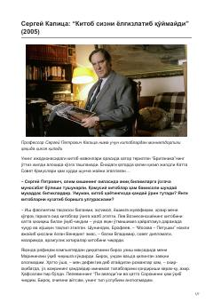

KSTaniqli olim Sergey Kapitsa bilan kitoblar va mutolaa madaniyati haqida qiziqarli suhbat.
Ushbu asar taniqli olim Sergey Kapitsaning kitoblar, mutolaa madaniyati va zamonaviy adabiyot holati haqidagi fikr-mulohazalarini o'z ichiga olgan suhbatdir. Muallif o'z hayotida kitobning tutgan o'rni, oilaviy kutubxona va klassik asarlarning inson tarbiyasidagi ahamiyati haqida hikoya qiladi.